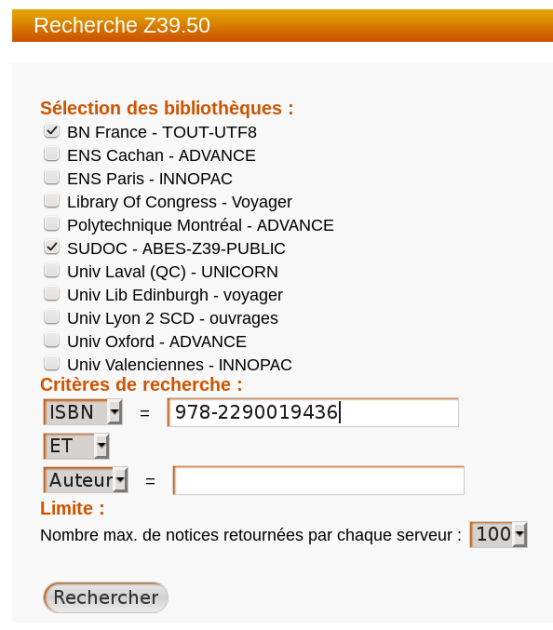

Z39.50
ConceptZ39.50⚓
Le protocole Z39.50 est un protocole de communication client/serveur permettant l'interrogation et la récupération d'informations dans des bases de données en ligne. Son utilisation concerne principalement des bases de données bibliographiques.
Le client Z39.50 inclus dans PMB permet d'interroger un ou plusieurs serveurs Z39.50 pour obtenir des notices et les inclure dans votre catalogue.
Des serveurs Z39.50 sont paramétrés par défaut dans PMB.
Pour plus d'informations, voir le Guide de l'administrateur PMB.
ProcédureComment intégrer une notice par Z39.50 ?⚓
Rendez vous sur
Catalogue>Externe : Z39.50Truc & astuce
Vous pouvez également utiliser le raccourci-clavier
EchapZCochez un ou plusieurs serveurs Z39.50
Saisissez un ou plusieurs critères de recherche
Pour un livre, saisir l'ISBN ou douchetter le code-barres commercial en sélectionnant
ISBNdans la liste déroulante.Vous pouvez également combiner deux critères de recherche, par exemple
titreetauteur.Patientez le temps que la recherche soit effectuée jusqu'à voir le message
Vous pouvez accéder aux résultatsCliquez sur le bouton
Résultatsen bas de l'écranDans la liste des réponses, choisissez une notice en cliquant sur son titre en gras
Vous arrivez sur la grille de catalogage pré-remplie, relire et éventuellement modifier ou compléter la notice
Remarque
Pour les autorités (auteur, éditeur...), PMB a détecté si l'auteur était déjà présent dans votre base ou s'il devait l'insérer lors de l'intégration de la notice. Ce qui évite les doublons d'autorités.
Vous pouvez choisir d'utiliser un auteur déjà existant ou d'insérer un nouvel auteur de la base à l'aide du
bouton radio en début de ligne. C'est ce bouton radio qui détermine ce que PMB doit intégrer à la notice (autorité existante ou nouvelle autorité).Cliquez sur en bas de la grille à gauche.
Une fois la notice intégrée, cliquez sur le lien
La voir en catalogagepour pouvoir créer les exemplaires, la modifier, rattacher un document numérique, ...